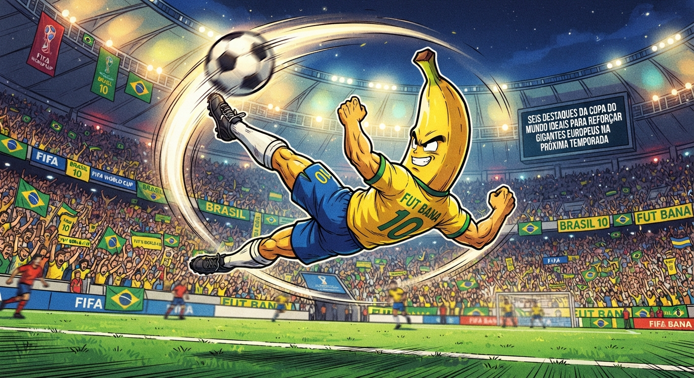

Último Post
O Mercado da Glória: Seis Diamantes da Copa do Mundo Prontos para Conquistar a Europa
A poeira da Copa do Mundo baixa, o gramado descansa, mas os escritórios dos gigantes europeus estão em ebulição. Não há momento mais fértil, mais nervoso e mais apaixonante no...